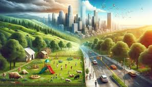

Agrinho: do campo à cidade, colhendo oportunidades

A transição do campo para a cidade muitas vezes é motivada pela busca por melhores condições de vida, educação ou oportunidades de emprego. Os trabalhadores rurais levam consigo habilidades adquiridas ao longo dos anos, como o conhecimento da terra, resiliência e trabalho em equipe, que podem ser valiosos em novos contextos urbanos.
Na cidade, esses indivíduos podem encontrar novas oportunidades de trabalho em setores como construção civil, serviços, comércio e indústria. Além disso, a possibilidade de acesso a serviços públicos, educação e saúde costuma ser um atrativo para muitos que buscam uma vida melhor para si e suas famílias.
A transição do campo à cidade não é isenta de desafios, como a adaptação a um novo estilo de vida, a distância da natureza e o enfrentamento das demandas urbanas. No entanto, muitos trabalhadores rurais conseguem colher frutos dessa mudança, construindo novas oportunidades e contribuindo para o desenvolvimento das áreas urbanas onde se estabelecem.
Assim, do campo à cidade, a jornada desses trabalhadores representa não apenas uma mudança geográfica, mas também uma busca por novas perspectivas e horizontes. É na intersecção entre esses dois universos que se constroem histórias de superação, crescimento e realização pessoal.